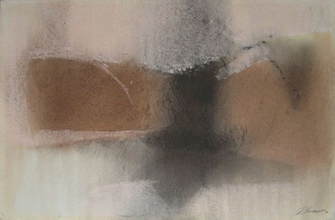

Lionel Abrams
1931–1997
Artist Biography
Lionel Abrams was born in South Africa and studied art at Witwatersrand Technical College and then at the Central School of Arts and Crafts in London. He returned to South Africa in the mid-1950s where he taught and painted and, despite being a self-effacing man who was ambivalent about exhibiting, between 1957 and 1981 had sixteen solo shows. He represented South Africa in 1959 and 1965 at the Sao Paulo biennales. Abrams painted in charcoal, pastels and oil and in both realist and abstract styles. His work is held in the South African National Gallery, Pretoria Art Museum, Johannesburg Art Gallery and many corporate collections.

Untitled